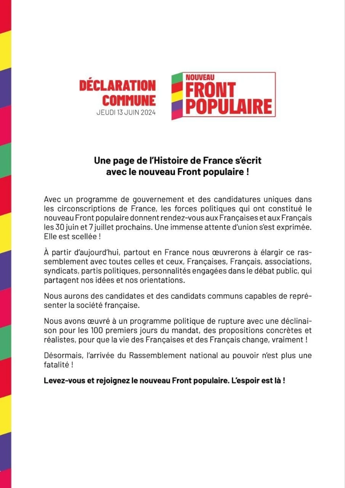

Déclaration commune relayée
Nouveau Front populaire. La déclaration commune du 13 juin
Date indiquée par Facebook · 13 juin 2024
Repères éditoriaux
Nous avons relayé la déclaration qui annonce l’accord du Nouveau Front populaire. Le document porte la parole commune de ses signataires.
Texte conservé avec la publication
Accord pour le nouveau Front Populaire.

Sources
Archive rouge · export Facebook · AR-0002-FB-01358
À lire aussi · Tags antisémites. Une déclaration de Fabien Roussel · Le lien d’origine